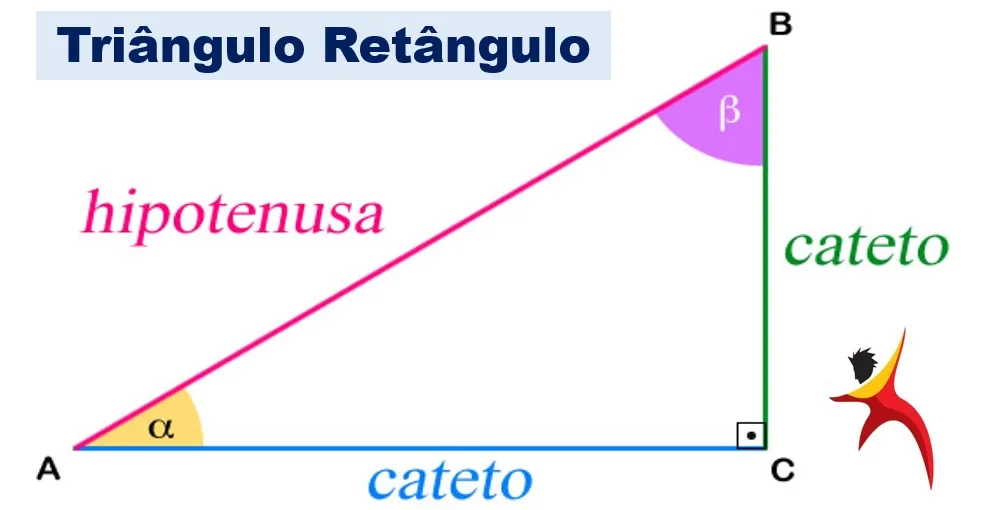

<main class="main-container d-flex p-2">
  <!--  Welcome to the Calculator Home Page-->
  <div class="hadow-lg p-3 mb-5 rounded container">
    <h2 class="fw-bold fs-3"> Bem vindo(a)/(is) ao Pythagoras Calculator </h2>
    <div class="text-break content-text">
      <span class="fs-6 fw-bold lh-1"> Uma calculadora que irá lhe auxiliar com o cálculo entre os lados de um triângulo
        retângulo.</span>
      <blockquote class=" fst-normal lh-base"> O Teorema de Pitágoras é um dos mais famosos teoremas da matemática. Este
        teorema é aplicado aos
        comprimentos dos lados do triângulo retângulo (triângulo que possui um ângulo reto, isto é, que mede 90°).
        A hipotenusa é o lado do triângulo que tem a maior medida e fica oposta ao ângulo reto, enquanto os catetos
        existem dois: o cateto adjacente e o cateto oposto. O cateto adjacente é aquele que fica ao lado de um ângulo e
        o cateto oposto fica em frente a um determinado ângulo.
      </blockquote>
      <div class="img-rectangleTriangle">
        
        <figcaption title="Triângulo retângulo fonte"> Triângulo retângulo fonte: <a class="text-decoration-none"
            href="//blogdoenem.com.br/triangulo-retangulo-matematica-enem/"
            target="_blank">(//blogdoenem.com.br/triangulo-retangulo-matematica-enem/ )</a></figcaption>
      </div>
    </div>
    <div class="start">
      <!-- Redirects to the calculator page  -->
      <button class="btn btn-outline-info" (click)="goToCalculator()"> Iniciar </button>
    </div>
  </div>
</main>
